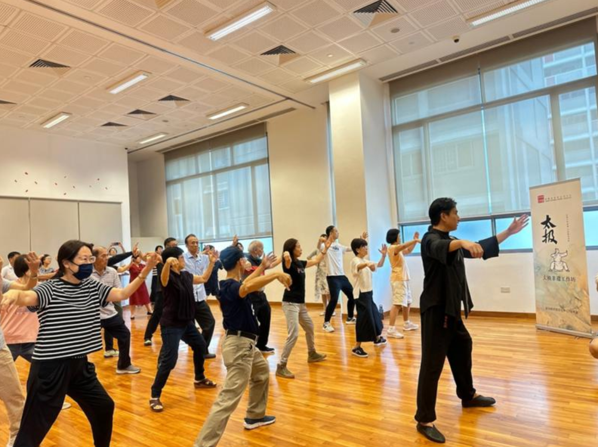
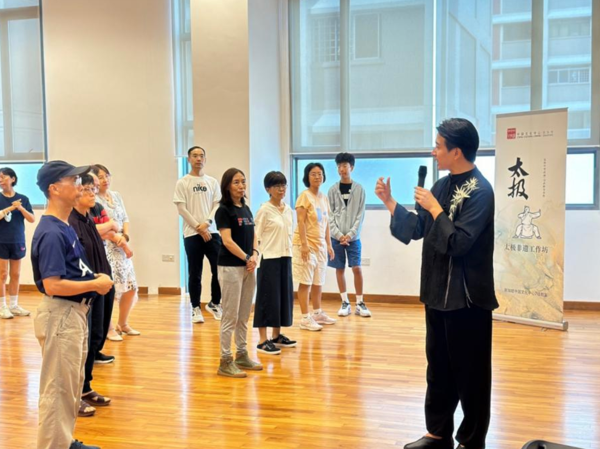
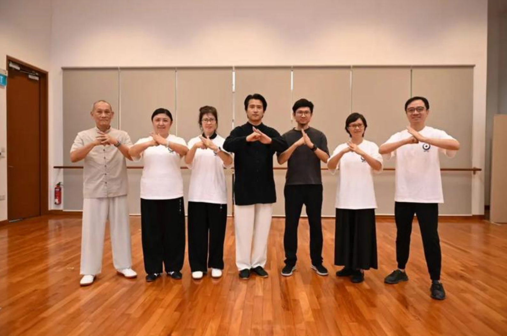
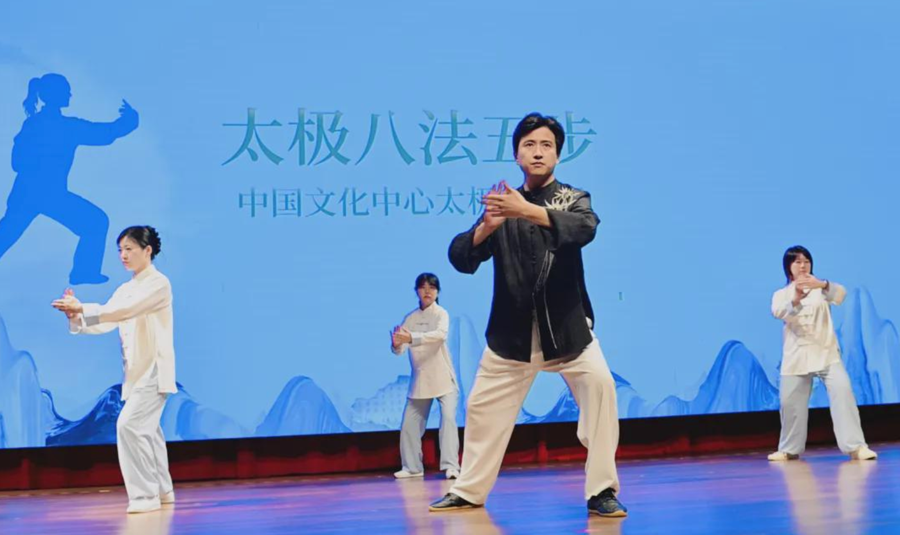
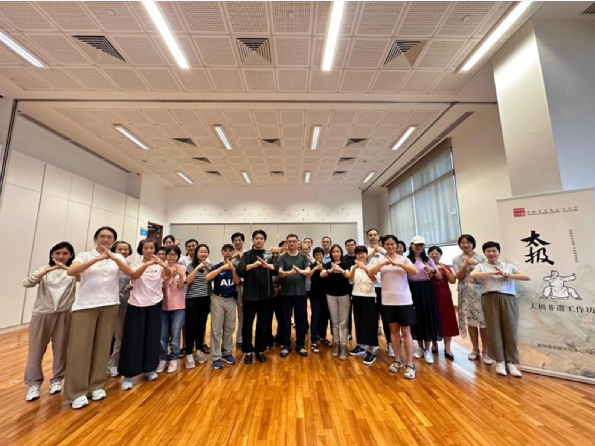

Master Feng Yanbo carries a tradition 700 years in the making. Learn authentic Chen-style Xin Yi Hun Yuan Tai Chi — a moving meditation that transforms body, mind, and spirit.
Be first to know when online classes open. No spam, ever.
Tai Chi is not exercise. It is a conversation between your body and the universe — a practice that has shaped Chinese culture, medicine, and philosophy for centuries.
Chen-style Xin Yi Hun Yuan Tai Chi, the oldest and most original form, is a living art: fluid and fierce, meditative and martial. Once experienced, it cannot be unfelt.
Modern science now confirms what ancient masters intuited: regular practice reduces cortisol, improves neuroplasticity, enhances balance, and cultivates the kind of calm that no app can manufacture.



Born into one of China's most revered martial arts families, Master Feng grew up training under his grandfather — the legendary Grandmaster Feng Zhiqiang, founder of Hun Yuan Tai Chi and 11th-generation Chen lineage master.
He is not teaching a syllabus. He is transmitting a living inheritance.
12th-generation Chen-style lineage holder — direct grandson of Grandmaster Feng Zhiqiang
7th-degree black belt · National certified martial arts examiner
Resident instructor · Singapore China Cultural Centre
Teaches in English & Mandarin · Online courses launching soon


Uninterrupted. Unedited. The authentic form as passed down through 12 generations.
Build your foundation in internal energy cultivation and learn the Chen-style 13-form sequence. No prior experience necessary — only curiosity.
Deepen your understanding with the Eight Methods & Five Steps, and master the full 24-form Chen-style sequence — the cornerstone of classical practice.
Enter the world of Chen-style sword forms — 20+ classical sword techniques rooted in Taoist philosophy, where precision meets flowing power.
The body follows the mind. The mind follows the breath.
The breath follows the Tao.
Tai Chi is not ancient history frozen in a museum. It is a living tradition, shaped by real people, real insights, and real transmissions across 700 years. These are some of those stories.
History, philosophy, and legend across seven centuries.
On Wudang Mountain, a Taoist monk witnesses a battle that changes martial arts forever.
Read the story →A retired Ming dynasty general retreats to his ancestral village and begins codifying something extraordinary.
Read the story →For 150 years, the Chen family guarded their art with fierce secrecy. Then one outsider changed everything.
Read the story →Every strike contains a defense. Every hardness holds a softness. This is not metaphor — it is the physics of Tai Chi.
Read the story →Thirteen doesn't mean thirteen poses. It encodes the entire universe of Tai Chi in a single number.
Read the story →In 1950s Beijing, a young master trained under two of China's greatest teachers simultaneously. What emerged was something entirely new.
Read the story →What separates Chen-style from all other Tai Chi is a quality masters call silk-reeling energy. It cannot be faked — only cultivated.
Read the story →The Eight Gates and Five Steps of Tai Chi map directly onto the I Ching's trigrams and Five Elements. This was not coincidence.
Read the story →The creation and transmission of Xin Yi Hun Yuan Tai Chi.
Not simply Chen-style with a new name. A complete synthesis of three traditions, built over a lifetime of mastery.
Read the story →From a childhood in a martial arts family, to training under two of China's greatest masters simultaneously — the story of Feng Zhiqiang.
Read the story →An American champion who had beaten fighters from 50 countries. A showcase in Shanghai. The phrase that spread through China's martial arts world.
Read the story →In 1988, Grandmaster Feng Zhiqiang first brought Hun Yuan Tai Chi to Singapore. Thirty-seven years later, his grandson continues that mission.
Read the story →In 2007, 700 practitioners from 16 countries gathered in Beijing. A village secret had become a world language.
Read the story →Eight things to nourish. Eight things to guard against. Grandmaster Feng Zhiqiang's final roadmap for cultivation.
Read the story →In Singapore or anywhere in the world — leave your email and we'll be in touch.